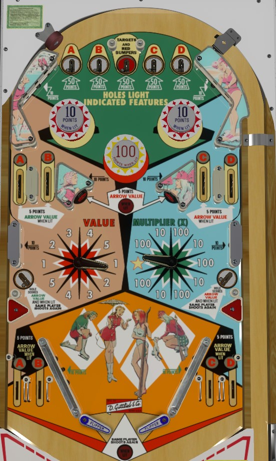

The "arrow value" is equal to the number being pointed to by the red Value flipper multiplied by the number pointed at by the blue/green Multiplier flipper. Shoot the pointer flippers to physically move them to different ranges and change the multiplication value. Make top saucers, generally off the plunge, so that more features than just the side saucers score the arrow value. If the Multiplier arrow is pointing at the star, any Arrow Value award is instantly 500 points. Pointer flippers never move on their own. Side saucers are occasionally lit for extra ball based on 1 point switch hits.
All top saucers score 50 points. The center saucer lights the red pop bumpers for 10 points instead of 1 as well as the center standup targets for Arrow Value instead of 5 points. The other saucers each light A, B, C, or D as indicated, which qualify various upper side lanes or out lanes to score the Arrow Value instead of 5 points. There is no reward for collecting all of A-B-C-D in one ball, and it's in fact quite difficult to get more than 1 or 2 letters on one ball.
There are two wheels on the playfield, each with their own pointer flipper. The pointer flipper can be physically moved during gameplay to point at one of 10 different zones of the wheel. The left wheel has two zones each labelled 1, 2, 3, 4, and 5. The right wheel has 5 zones labelled 100, 4 zones labelled 10, and one Star. The Arrow Value at any given time is equal to the multiplicative product of the two currently selected wheel numbers, which can be anywhere from 10 to 500 points. If the right wheel is pointing at the Star, the Arrow Value is always 500 points no matter what the left wheel is pointed at. Arrow Value can be collected at any time from the lower side saucers, or from letter lanes and standup targets that are lit after making various top saucers. The Arrow positions can never be reset on their own, and stay where they are across balls, players, and games, so you may wish to consider trying to leave the arrows on a low value combination for other players' turns in a multiplayer game.
In addition to always scoring the Arrow Value, the side saucers are intermittently lit for extra ball based on 1-point switch hits. Maximum 1 extra ball per ball in play.
There are no in lanes, Flippers back up directly to the slingshots. Thin rail slings are used to make room for two out lanes under each slingshot; the left out lanes are A and B lanes, and the right out lanes are C and D lanes, which are lit to score the Arrow Value after the corresponding letter's saucer is made.
There is no end of ball bonus. Extra ball cannot be set to a point value. There is no playfield special. No features are carried over from ball to ball except for the position of the pointer flippers. Tilt ends the current ball in play only.